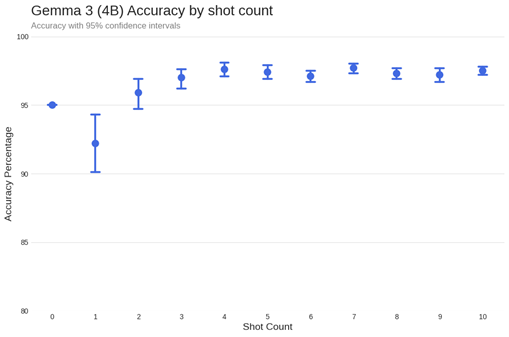
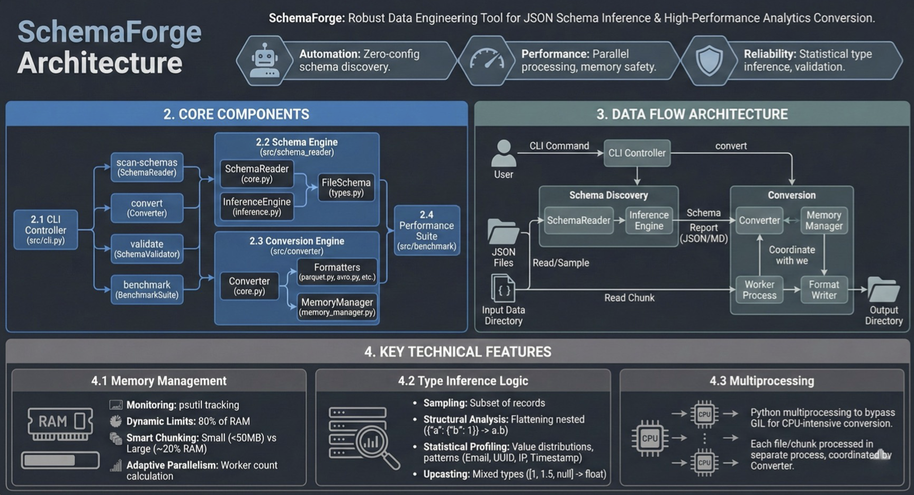

In the preliminary round of Datavidia 9.0, my team forecast daily prices for 13 food commodities across 34 Indonesian provinces. We implemented NeuralForecast’s PatchTST (Transformer-based) and N-HiTS (MLP-based) models, enriching the data with national holiday features to capture seasonal spikes like Ramadan. After handling missing values and preprocessing, we trained the models in under three minutes, utilizing a rolling forecast strategy. By selecting the best-performing model per province-commodity pair, we achieved a private leaderboard MAPE score of 0.04546.

Collaborating with a team, I conducted a comparative study to identify the optimal model for sentiment classification on UCI and IMDB datasets. We benchmarked traditional ML architectures (CNN, LSTM) against transforemer-based models, such as BERT-based models and Large Language Models. Our findings revealed that fine-tuning Gemma 3 (4B) yielded superior performance, achieving up to 98% accuracy and significantly outperforming standard Transformer and BERT implementations.

This study presents an experimental framework benchmarking five major big data formats—JSONL, CSV, Parquet, Avro, and Feather—across storage size, I/O efficiency, and resource utilization. We converted datasets from JSONL to target formats and analyzed performance trade-offs. Results highlighted Parquet as the most efficient for storage and reads, while Feather excelled in in-memory analytics, providing a practical guide for selecting formats based on workload requirements.

During my internship as a Network Operation Center Analyst at PT Tower Bersama Infrastructure Group, I analyzed trouble ticket data (2021-2025) covering theft and infrastructure issues. I utilized panel regression with socioeconomic factors, logistic regression, and time series forecasting to predict incident trends. The study culminated in data-driven recommendations to enhance preventive strategies and operational response efficiency.

Collaborating with a multidisciplinary team, I developed an end-to-end deep learning solution for detecting skin lesions. We utilized the EfficientNet architecture for high-accuracy image classification and deployed the model via a Streamlit web interface, enabling real-time detection of over 13 types of skin cancer and conditions.

In a team of three, we applied Fractional Kolmogorov-Arnold Networks (fKAN) to assess environmental changes in Indonesia’s New Capital (IKN). By analyzing satellite imagery from 2019 and 2024, we utilized this advanced classification algorithm to accurately map and quantify the extent of deforestation occurring during the construction phase.

I worked with a team to model heart failure mortality risk, comparing the performance of Artificial Neural Networks (ANN) and Convolutional Neural Networks (CNN). Our analysis determined that the CNN architecture provided superior predictive accuracy. We further enhanced the project by generating synthetic medical data using Generative Adversarial Networks (GANs) to address class imbalance.

This study leveraged Official Statistics to model Life Expectancy in West Java, addressing spatial dependencies often missed by standard linear regression. Using Spatial Cross Regressive (SCR) models, we identified Average Years of Schooling, Adequate Housing, and Unemployment Rate as key predictors (AIC 70.56), emphasizing the need for targeted government intervention to support SDGs.

This project applied the YOLOv5 object detection model to monitor real-time traffic on Jalan Merdeka Barat, Jakarta. The model successfully detected over 7,000 vehicles across varying classes with high processing speed. We refined detections using Non-Maximum Suppression (NMS) to reduce redundancy, though challenges remained in detecting distant objects due to confidence threshold limitations.

For the Satria Data 2024 Big Data Challenge, We analyzed the digital landscape of the 2024 Indonesian Presidential Election. We employed sentiment analysis, topic modeling, and social network analysis on scraped Twitter data to map public opinion and interaction patterns surrounding the candidates.

A collection of interactive dashboards created using Tableau, demonstrating skills in data storytelling, business intelligence, and visual analytics across various datasets.

During my internship at PT Allianz Utama Indonesia, I utilized binomial logistic regression to identify key factors influencing insurance policy renewals. By analyzing demographics, payment history, and claims, I provided actionable insights to optimize customer retention strategies, though specific results remain confidential.

As an intern at The Daily Foodhall, I analyzed four months of transactional data to optimize sales strategies. I performed Market Basket Analysis to identify product associations for bundling and evaluated temporal transaction patterns to improve operational staffing. Due to confidentiality, the raw data cannot be disclosed.

Leading a team of four, I developed a text analytics pipeline to classify misinformation using data from Mafindo. We performed extensive preprocessing and text visualization before benchmarking five machine learning algorithms, ultimately identifying Support Vector Machine (SVM) as the highest-performing model for hoax detection.

In this data mining case study, my team performed comprehensive Exploratory Data Analysis (EDA) on Indonesian property data from 2021-2023. We handled missing values and visualized regional price distributions to identify cities offering the highest potential ROI for property businesses.

I collaborated with a team to design and implement a comprehensive Airport Management System from scratch using SQLite. The project involved creating a full Entity-Relationship (ER) diagram, writing schema scripts, and running simulations to validate data integrity and operational flows.

This project involved forecasting Telkom Indonesia (TLKM) stock prices using R. We conducted stationarity tests and analyzed ACF/PACF plots to construct an ARIMA model, successfully identifying the parameter configuration that yielded the lowest error metrics for accurate time-series prediction.

Working with a team, I developed a Linear Regression model to predict used car prices based on numeric and categorical features. We conducted rigorous model diagnostics, including residual analysis and homoscedasticity checks, to ensure statistical validity and extract pricing insights.

Using the Twitter API, my team harvested and analyzed tweets during the Formula E event in Indonesia. We performed sentiment analysis and Exploratory Data Analysis (EDA) to gauge public perception, categorizing reactions into positive, negative, and neutral sentiments to understand the event's digital impact.